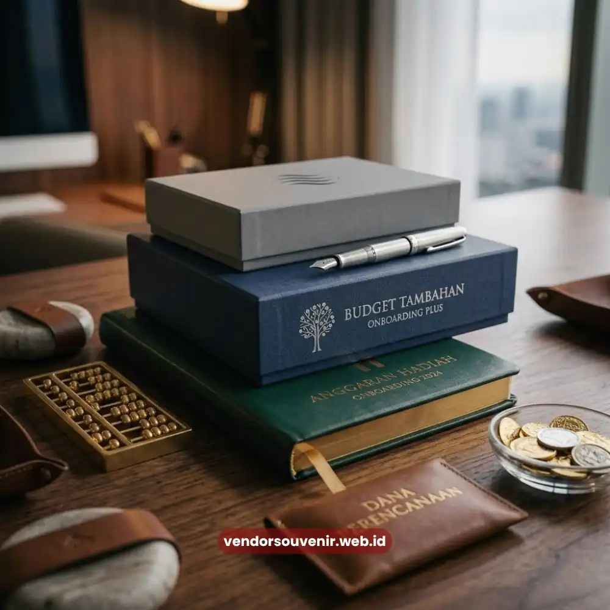

Daftar Isi
Budget hadiah karyawan baru sebaiknya ditentukan berdasarkan jumlah karyawan yang direkrut, jenjang jabatan, serta tujuan employer branding yang ingin dicapai perusahaan. Perusahaan dapat menyusun anggaran secara bertingkat, mulai dari paket dasar yang ekonomis hingga paket premium untuk posisi tertentu, tanpa mengorbankan kesan profesional program onboarding.
Perencanaan anggaran yang matang memungkinkan perusahaan tetap memberikan pengalaman onboarding yang berkesan secara konsisten kepada seluruh karyawan baru.
- Budget hadiah karyawan baru dipengaruhi oleh jumlah karyawan, jenjang jabatan, dan tujuan branding perusahaan.
- Penyusunan anggaran bertingkat memungkinkan efisiensi biaya tanpa mengurangi kualitas kesan onboarding.
- Faktor material, teknik cetak logo, dan volume pemesanan turut memengaruhi total biaya hadiah karyawan baru.
- Budget terbatas tetap dapat menghasilkan kesan onboarding yang baik melalui pemilihan produk yang tepat.
- Vendor Souvenir menyediakan opsi paket sesuai kebutuhan anggaran perusahaan Anda.
Faktor Apa Saja yang Memengaruhi Budget Hadiah Karyawan Baru?
Besaran budget hadiah karyawan baru tidak dapat ditentukan secara seragam, karena setiap perusahaan memiliki kebutuhan, skala, dan tujuan branding yang berbeda dalam program onboarding mereka.
Jumlah Karyawan yang Direkrut dalam Satu Periode
Perusahaan dengan volume rekrutmen tinggi umumnya perlu mempertimbangkan efisiensi biaya per unit melalui pemesanan dalam jumlah besar, sementara perusahaan dengan rekrutmen dalam skala kecil memiliki fleksibilitas lebih besar dalam memilih produk dengan variasi lebih personal.
Jumlah karyawan yang direkrut secara langsung memengaruhi struktur anggaran keseluruhan program onboarding.
Jenjang Jabatan dan Posisi Karyawan
Banyak perusahaan menerapkan tingkatan hadiah yang berbeda berdasarkan jenjang jabatan, misalnya paket dasar untuk staf operasional dan paket dengan material lebih premium untuk posisi manajerial.
Pendekatan ini membantu menjaga proporsionalitas anggaran tanpa menghilangkan kesan penghargaan terhadap seluruh karyawan baru.

Menyesuaikan Paket Onboarding dengan Anggaran yang Tersedia
Tujuan Employer Branding yang Ingin Dicapai
Perusahaan yang menjadikan hadiah karyawan baru sebagai bagian dari strategi employer branding jangka panjang umumnya bersedia mengalokasikan anggaran lebih besar dibandingkan perusahaan yang hanya menganggapnya sebagai formalitas administratif.
Tujuan strategis ini perlu dipertimbangkan sejak awal penyusunan anggaran agar hasil yang dicapai sesuai ekspektasi.
Bagaimana Menyusun Tingkatan Anggaran secara Efisien?
Penyusunan tingkatan anggaran membantu perusahaan mengelola pengeluaran secara terstruktur tanpa mengurangi kualitas pengalaman onboarding yang diterima karyawan baru.
Paket Dasar untuk Kebutuhan Umum
Paket dasar umumnya terdiri dari alat tulis sederhana dan satu barang fungsional utama, seperti tumbler atau notebook, yang cukup untuk memberikan kesan sambutan tanpa memerlukan anggaran besar.
Paket ini cocok diterapkan secara merata kepada seluruh karyawan baru sebagai standar minimal program onboarding.
Paket Menengah dengan Nilai Tambah
Paket menengah dapat menambahkan komponen tambahan seperti tas kerja ringan atau merchandise gaya hidup, sehingga memberikan nilai lebih tanpa harus melonjak signifikan dari sisi anggaran.
Tingkatan ini sering digunakan sebagai standar umum bagi sebagian besar posisi di perusahaan.
Paket Premium untuk Posisi Strategis
Paket premium biasanya disediakan untuk posisi manajerial atau eksekutif, dengan material yang lebih berkualitas seperti tas kerja kulit atau perlengkapan kantor eksklusif.
Meski biayanya lebih tinggi, alokasi ini sepadan dengan peran strategis yang diemban posisi tersebut dalam organisasi.
Apakah Budget Terbatas Tetap Bisa Menghasilkan Kesan Onboarding yang Baik?
Anggaran terbatas bukan berarti perusahaan harus mengorbankan kualitas kesan onboarding, selama pemilihan produk dan strategi penyusunan paket dilakukan secara cermat dan tepat sasaran.
Fokus pada Satu Barang Fungsional Berkualitas
Dibandingkan memberikan banyak barang dengan kualitas rendah, lebih efektif memilih satu barang fungsional berkualitas baik yang benar-benar akan digunakan karyawan secara rutin.
Pendekatan ini memberikan kesan lebih baik meski dengan anggaran yang lebih terbatas.
Optimalkan Kemasan dan Presentasi
Kemasan yang rapi dan presentasi yang menarik dapat meningkatkan persepsi nilai suatu hadiah, meskipun harga barang di dalamnya tergolong ekonomis.
Detail kecil seperti kemasan custom atau kartu ucapan dapat memberikan dampak emosional yang signifikan tanpa menambah beban anggaran secara berarti.
Manfaatkan Pemesanan dalam Jumlah Besar
Pemesanan dalam volume besar umumnya memberikan efisiensi biaya per unit yang lebih baik, sehingga perusahaan dapat mengalokasikan sebagian penghematan tersebut untuk meningkatkan kualitas material tanpa melampaui anggaran keseluruhan yang telah ditetapkan.
Bagaimana Menghitung Nilai Kembali dari Investasi Hadiah Karyawan Baru?
Nilai kembali dari investasi hadiah karyawan baru dapat dilihat dari dampaknya terhadap kecepatan adaptasi karyawan, tingkat keterlibatan kerja, serta citra perusahaan yang terbentuk di mata karyawan baru maupun lingkungan eksternal.
Dampak terhadap Retensi Karyawan Jangka Panjang
Kesan positif yang terbentuk sejak hari pertama dapat berkontribusi pada tingkat kenyamanan karyawan dalam bertahan di perusahaan, meskipun faktor retensi tentu juga dipengaruhi banyak aspek lain di luar hadiah onboarding semata.
Investasi pada pengalaman onboarding yang baik tetap menjadi salah satu elemen pendukung yang relevan untuk dipertimbangkan.
Kontribusi terhadap Citra Perusahaan di Pasar Talenta
Karyawan yang membagikan pengalaman onboarding positif, termasuk hadiah yang mereka terima, secara tidak langsung turut membentuk citra perusahaan di mata calon talenta lain di pasar kerja.
Citra ini dapat menjadi nilai tambah dalam upaya perusahaan menarik kandidat berkualitas di masa mendatang.

Dapatkan Solusi Paket Onboarding Karyawan dari Vendor Souvenir
Penyusunan budget hadiah karyawan baru yang ideal tidak semata soal besar kecilnya anggaran, melainkan tentang ketepatan strategi dalam mengalokasikan sumber daya sesuai kebutuhan dan tujuan employer branding perusahaan.
Dengan perencanaan tingkatan paket yang jelas, perusahaan dapat tetap memberikan pengalaman onboarding berkualitas pada berbagai skala anggaran.
Jika perusahaan Anda membutuhkan referensi paket hadiah karyawan baru yang sesuai dengan berbagai tingkatan anggaran, tim Vendor Souvenir siap membantu menyusun solusi yang tepat guna.
Konsultasikan kebutuhan dan estimasi anggaran onboarding Anda bersama Vendor Souvenir sekarang.
Pertanyaan yang Sering Diajukan (FAQ)
Apakah ada standar baku untuk besaran budget hadiah karyawan baru?
Tidak ada standar baku, karena besaran budget umumnya disesuaikan dengan kebijakan internal, jumlah karyawan, dan tujuan employer branding masing-masing perusahaan.
Apakah budget hadiah karyawan baru perlu dievaluasi secara berkala?
Sebaiknya dievaluasi secara berkala, terutama jika terdapat perubahan skala rekrutmen, tren merchandise, atau kebijakan anggaran perusahaan secara umum.
Bagaimana cara mengelola anggaran jika jumlah karyawan baru meningkat drastis dalam satu periode?
Perusahaan dapat mempertimbangkan pemesanan dalam volume besar serta penyesuaian jenis produk agar tetap efisien secara biaya tanpa mengurangi kualitas kesan onboarding secara signifikan.
Maroon Souvenir
Partner Corporate Gift terpercaya di Indonesia. Berpengalaman melayani ratusan perusahaan sejak 2018.
Lihat Portofolio Kami